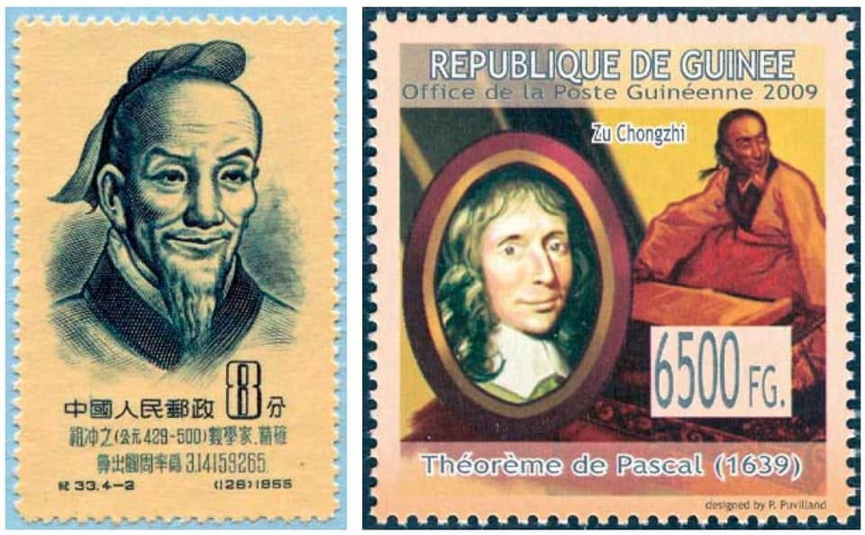

祖沖之如何測算冬至
中國南北朝偉大的數學家祖沖之 ，不但在圓周率的計算上領先世界，也對中國的曆法作出劃時代的貢獻 ，創造了「大明曆」，給出一個回歸年是365.2428的精確數字 ，這成就領先了西方幾百年！
他當時為了改革曆法 與朝廷寵臣戴法興進行了一場留名青史、震古鑠今的辯論，後來他寫下著名的「辯戴法興難新曆」載於宋書--律曆志 ，這應是歷史上「數學文學的典範」。
我曾在課堂上背了前幾句：
～臣少銳愚尚，專功數術，搜練古今，博採沉奧，唐篇夏典，莫不揆量，周正漢朔，咸加該驗。罄策籌之思，究疏密之辨～
今天12/21 數字是回文 ，節氣是冬至，祖沖之如何測算出每年精確的冬至時刻呢？
說來也簡單，由於竿影變化在短期內成比例，只要把這三天的晷長並列畫出，先從最短的那條晷長頂端，畫一條延長線通過冬至當天測得的晷長頂端，然後再從另一條晷長頂端，反方向畫一條相同斜率的線，兩條線的交會處就是「真正」的冬至時刻晷長。接下來只需要應用線性內插法，用一個簡單的除式就可推算出真正的冬至時刻。
https://www.facebook.com/groups/695697124716309/permalink/719668148985873/
